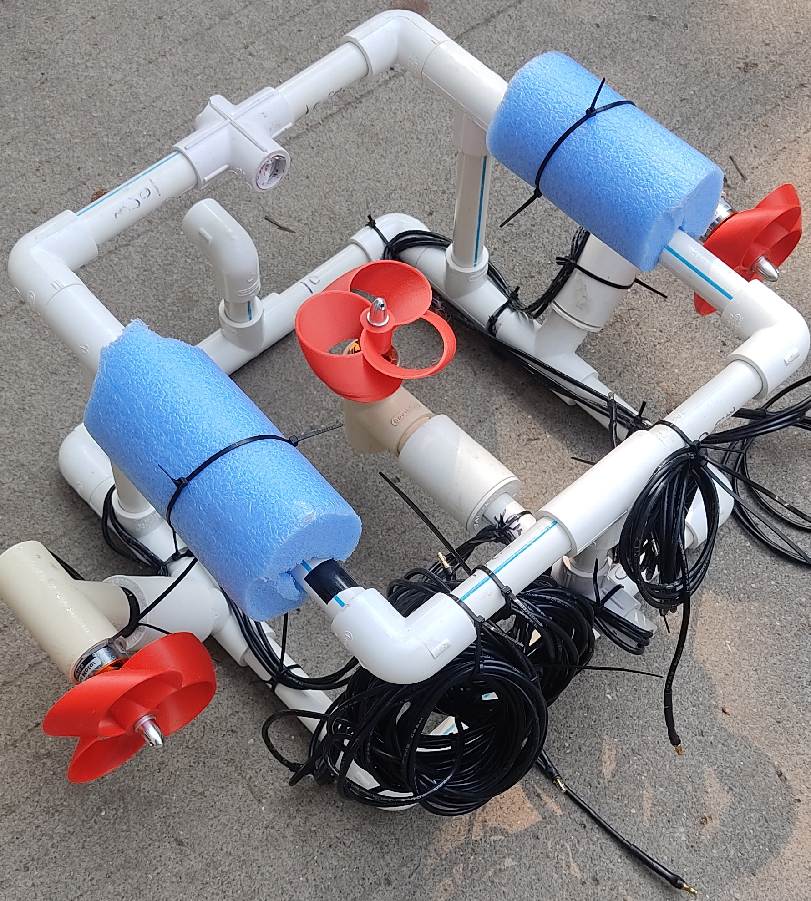

SUB-EX is a portable underwater robotic vehicle developed for inspection and monitoring of submerged infrastructure and aquatic environments. The system is designed to perform detailed underwater surveys in locations where human access is difficult, hazardous, or economically impractical. By combining real-time imaging, sensor integration, and remote operation capabilities, SUB-EX provides an efficient solution for underwater inspection tasks.
The vehicle is capable of navigating underwater environments while capturing visual and sensor data for analysis. It can inspect structures such as dams, bridges, pipelines, reservoirs, offshore installations, and ship hulls. The collected information enables operators to identify defects, monitor structural conditions, and assess underwater assets without the need for divers.
Inspection of underwater infrastructure traditionally relies on manual diver-based surveys or expensive commercial remotely operated vehicles. These approaches are often limited by safety concerns, operational costs, accessibility challenges, and environmental conditions. There is a growing need for a compact and cost-effective system capable of performing reliable underwater inspections.
SUB-EX offers a remotely operated underwater platform equipped with imaging and monitoring capabilities for real-time inspection. The vehicle can maneuver through submerged environments, transmit live video feeds, and gather critical data for condition assessment. Its modular architecture allows integration of additional sensors based on specific inspection requirements.
The project successfully demonstrated underwater inspection and monitoring capabilities in controlled environments. SUB-EX enabled effective collection of visual data while maintaining stable underwater navigation. The work received recognition for its practical applications in infrastructure inspection and environmental monitoring.
Patent Published: Application No. 202521012483
Explore the project repository and supporting documentation below: